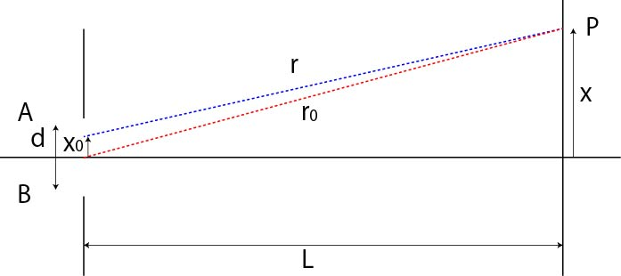

回折-11
一個のスリットの回折-01
スリットが１個の場合はどうなるのでしょう？
これも回折現象が起こります．
一つの開口の各点からの光が干渉し合って，回折現象を起こします．

開口幅，ｄ，の各点から発せられた光の干渉光は，距離Lだけ離れたスクリーン上に投影されます．
距離ｘの位置のP点での光強度をスリット全域で積分すればよいので，
\(\Large r = \sqrt{L^2 + (x-x_0)^2} \)
となります．ここで，
\(\Large r_0 = \sqrt{L^2 + x^2} \)
とすると，
\(\Large \begin{eqnarray}
r &=& \sqrt{L^2 + x^2 - 2xx_0 + x_0^2} \\
&=&
\sqrt{r_0^2 - 2xx_0 + x_0^2} \\
&=&
r_0 \sqrt{1+\frac{ -2xx_0 + x_0^2}{r_0^2}}
\end{eqnarray} \)
となります．ここで，(1+x)aのテイラー展開を使えば（計算は，ここ），
\(\Large \begin{eqnarray}
r &=& r_0 \left[ 1+\frac{1}{2}\frac{ -2xx_0 + x_0^2}{r_0^2}
\right] \\
&=& r_0 \left[ 1-\frac{xx_0}{r_0^2}+\frac{1}{2}\frac{ x_0^2}{r_0^2}
\right] \end{eqnarray} \)
となります，ここまでを，フレネル近似，と呼びます．
さらに，近似を行います．第3項を無視すると，
\(\Large r \simeq r_0 \left[ 1-\frac{xx_0}{r_0^2} \right] \)
となります，ここまでを，フラウンフォーファ近似，と呼びます．
では，次に積分を行ってみましょう．